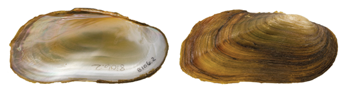

Popenaias popeii (Lea, 1857)
Texas Hornshell

Popenaias popeii – middle Rio Grande near Laredo, TX [Rio Grande drainage], length 81.0 mm.
Identification
Shell structure: thin to moderately thick and compressed to slightly inflated.
Shell outline: elongate rhomboidal.
Posterior ridge: low, broadly rounded, sometimes with two ridges.
Shell color: tan, brown, or black.
Rays: may have faint green rays; surface subglossy to dull.
Shell texture: without sculpture.
Umbo: low, narrow to broad, slightly elevated above the hinge line; umbo cavity shallow.
Umbo sculpture: absent or several faint ridges.
Pseudocardinal teeth: small, triangular, thin, compressed, 2 in the left valve, 1 tooth in the right valve.
Lateral teeth: long, thin, compressed, slightly curved, 2 in the left valve, 1 in the right valve.
Interdentum: thin, narrow to almost absent.
Nacre: white to bluish-white, some may show a slight salmon tint dorsally; iridescent posteriorly.
Other: not sexually dimorphic.
General Range
Rio Grande drainage of Texas, New Mexico, and Mexico.
Habitat
Small streams to large rivers in slow to moderate current, often residing in rock crevices, travertine shelves, under large boulders and in clean swept riffles.
Legal listing status
USFWS: Endangered
Texas: State Endangered